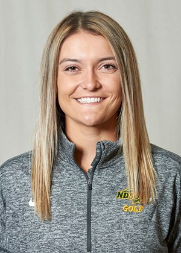
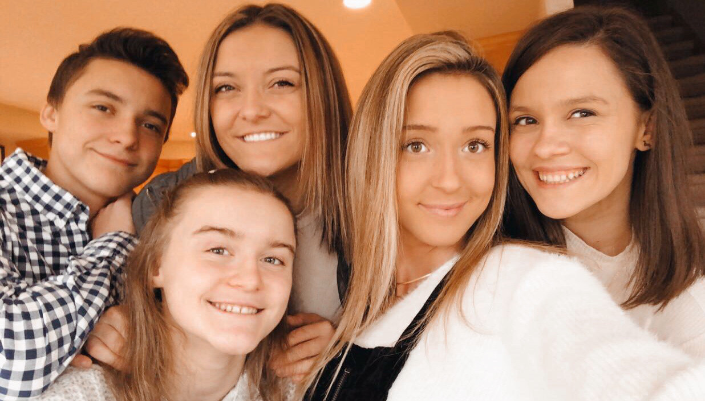
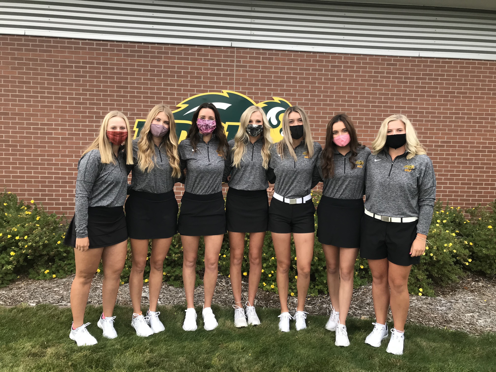

Who is Taylor McCorkle?
Inside my Life!

Welcome to my blog! I'm so happy you made it here and I'm excited to share more about the people and things that have shaped me into the person I am today. Three of the most important things in my life are God, my family, and golf but in this blog I will only be sharing with you my family and my golf career. Let's get started!
~ FAMILY ~

Here is a picture of my siblings and I. I come from small town Oregon which just south of Madison, Wisconsin. I grew up as the second oldest of five kids and have two loving and supportive parents. My older sister, Morgan, played golf for the University of St. Thomas. One of my younger sisters, Andi, is a student at University of Wisconsin-Madison. My other younger sister, Alix, is a senior in high school and is about ready to head off to college. My brother, Billy, is the baby of the family and he is a sophomore in high school. The best part about growing up with lots of siblings is that each day was never boring, there was always something going on. From basketball practices and golf tournaments and dance classes, the McCorkle's were always busy. Back home, we live on a small 18-hole golf course so we were always out goofing around. That course is what really got me into golf. I remember so many times growing up when my siblings and I would run out into our backyard and have contests to see who could hit it the closest to the golf flag while my mother sat in her lawn chair with her laptop. Coincidentally, it just so happened that the house wi-fi connected just long enough for her to get some work done. I love my family, they are the people who made me who I am today and I am so thankful for them.
~ Golf ~

dfjlsd
NDSU Women's Golf 2017-2018 from NDSU Athletics on Vimeo.